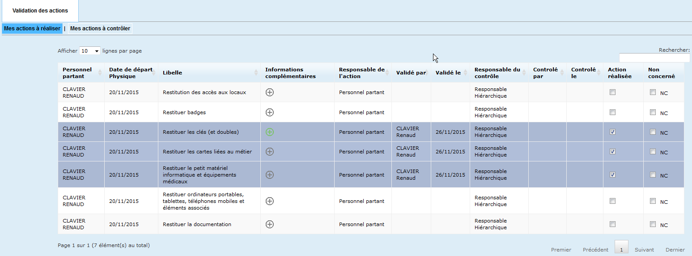

1. Introduction
L'application GESMOUV (anciennement GESDEP) a pour objectif la gestion des actions liées aux mouvements du personnel (arrivées, départs de l'institution, mutations dans un autre organisme, changements de site géographique).
Ce document décrit les fonctionnalités de la version 2.6 de GESMOUV.
2. Public Cible de ce document
Ce manuel utilisateur s'adresse aux personnes suivantes :
- Le personnel en partance ou rejoignant l'entreprise.
- Les responsables hiérarchiques.
- Les responsables d'un service support impliqué dans le processus de mouvement.
3. Guide d'Utilisation
3.1. Personnel en partance ou rejoignant l'entreprise
Sur initialisation des services RH, vous venez de recevoir un mail automatique de l’application (anciennement GESDEP) pour valider les actions liées à votre mouvement.
En ouvrant l’application par le lien présent dans le courriel reçu, vous verrez apparaître un tableau de synthèse vous indiquant le nombre d’actions restant à réaliser (case rouge => il reste des actions, case verte => c’est terminé).
Exemple : 1 action réalisée sur 7 au total, il en reste donc 6.
Un clic sur la case vous indiquant le nombre d’actions (ex: "1/7") vous ouvre le tableau décrivant les actions à réaliser.
Des informations complémentaires sur les actions sont éventuellement présentes dans la rubrique « Informations complémentaires » (indiquées par une icône "+" ou une case verte).
Vous devez valider chaque action terminée en cochant la case « Action réalisée » ou la case « Non concerné » (NC). Les actions définies comme « réalisées » apparaissent sur fond « bleu ». La date et le nom de l’acteur sont renseignés au moment de la validation.
Si vous n’êtes pas concerné par une action, cochez la case NC (non concerné).
Toutes les actions terminées doivent être validées par la sélection de la case « action réalisée ».
Une case «Verte» (ou icône "+") dans la colonne "Informations complémentaires" indique des informations complémentaires à consulter.
3.2. Responsable Hiérarchique & Responsable d’un Service Support
Vous avez reçu un courriel automatique de l’application vous indiquant le mouvement d’un personnel dans l’entreprise. Votre rôle au sein de l’organisme peut vous amener à devoir réaliser plusieurs types d’actions.
En ouvrant l’application par le lien présent dans le courriel reçu, vous arrivez sur un tableau de synthèse vous indiquant toutes les actions à réaliser, à contrôler et à éventuellement compléter. Il y a une ligne par mouvement (case rouge => il reste des actions, case verte => c’est terminé).

3.2.1. Compléter la description des actions
Compléter certaines actions peut être utile pour aider le personnel à réaliser celle-ci. Il est important de compléter la description des actions au plus tôt. (Exemple : pour le service informatique, vous avez la possibilité de renseigner la liste précise des matériels à restituer).
En réalisant un clic sur une case de la colonne « Nb actions complétées » (colonne la plus à droite dans l'image ci-dessus, marquée "1" dans le document original), vous êtes redirigé vers la liste des « Actions à Compléter » du personnel concerné.

Pour renseigner des informations complémentaires sur une action, sélectionnez le symbole « + » (vert) de l’action concernée.
Après saisie dans la boite de dialogue, validez vos modifications par le bouton « Modifier ».
3.2.2. Réalisation des actions
En tant que responsable hiérarchique ou responsable d’un service support, la réalisation de certaines actions peut être de votre responsabilité. En réalisant un clic sur une case de la colonne « Nb actions réalisées » (voir image gesmouv3.png), vous êtes redirigés vers la liste des « Actions à réaliser » pour cet agent.
Les lignes sur fond « bleu » sont déjà réalisées. Validez les actions sous votre responsabilité en cochant "Action réalisée" ou "NC".
3.2.3. Contrôle des actions
En tant que responsable hiérarchique ou responsable d’un service support, vous êtes amené à contrôler que des actions ont bien été effectuées par l’agent ou un autre acteur.
En réalisant un clic sur une case de la colonne « Nb actions contrôlées » (voir image gesmouv3.png), vous êtes redirigés vers la liste des « Actions à contrôler » pour cet agent.
Les lignes sur fond « bleu » sont celles déjà réalisées. Cochez la case « Action contrôlée ». La date du contrôle et l’acteur du contrôle sont automatiquement renseignés.
Si vous êtes à la fois responsable de l’action et de son contrôle, la validation du contrôle réalise les deux opérations simultanément.
4. Historique des Versions du Manuel
- 1.0 (26/11/2015): Création
- 2.0 (29/07/2016): Évolutions fonctionnelles V2
- 2.3 (04/04/2017): GESDEP devient GESMOUV et traite de tous les mouvements (départ et arrivée)
- 2.4 (25/08/2017): Évolutions liées à l’ANR et amélioration mail de sortie
- 2.6 (11/06/2018): Mise à jour copie écran
5. Support et Contact
Si vous rencontrez des difficultés avec l'application GESMOUV ou si vous avez des questions qui ne sont pas couvertes par cette documentation, veuillez vous référer aux contacts habituels de support au sein de la DRSM IDF.
Pour information, les personnes mentionnées dans le document original (V2.6 du 11/06/2018) étaient :
- Rédaction MOE : R.CLAVIER
- Validation MOA : Delphine MULLER-GOSSET
Veuillez vérifier en interne pour les contacts de support actuels.